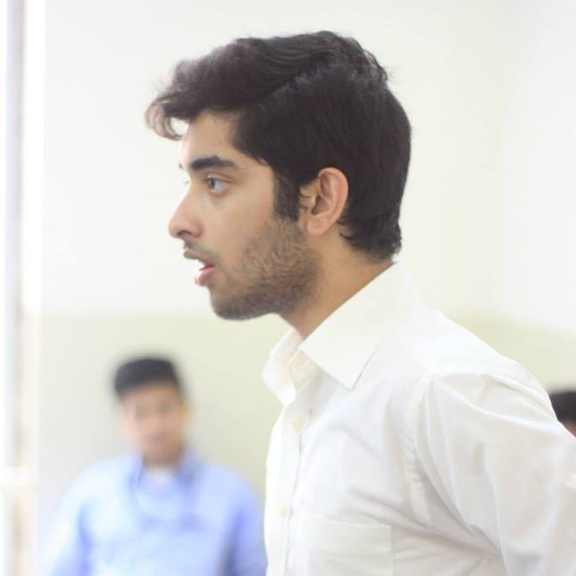

Asfandyar Khan
Dear all,
It is my pleasure to welcome you to the second annual Beaconhouse Margalla Islamabad Diplomats' Conference. I am Asfandyar Khan, and I have the privilege of being Committee Director for the International Crisis Ad hoc Committee this year. Currently a sophomore at LUMS, I prefer Parliamentary Style Debating to MUNs, which best explains my decision to serve as Director of this specific committee. Due to its interesting rules of procedure, the ICAC has the unique distinction of attracting a talented bunch of delegates each year, committed to exhaustive searches for meticulous solutions to problems that the said delegates are often unaware of before stepping into the committee room. Shrewd diplomacy and strenuous debating paves the path to consensus building against a backdrop of spontaneity and flexibility, leading to a fascinating experience for all involved. However, none of the expectations should be cause for concern, as you are all in good hands; Farhan and I will ensure that we guide the committee adequately, whether it is regarding logical flow of argumentation or appropriately-timed Entertainment Sessions. Nevertheless, dedication, perseverance and quick thinking are essential, which is why I would urge the more experienced among you to definitely give this a try, without implying that beginners will struggle – after all, stranger things have happened.
Good luck, and prepare yourselves for a very enjoyable experience in August. I am looking forward to what will, definitely, be a very exciting conference for everyone involved.
Best,
Asfandyar Khan